Chapter 23 Bayesian data analysis 3
23.1 Learning goals
- Building Bayesian models with
brms.- Model evaluation:
- Visualizing and interpreting results.
- Testing hypotheses.
- Inference evaluation: Did things work out?
- Model evaluation:
23.2 Load packages and set plotting theme
library("knitr") # for knitting RMarkdown
library("kableExtra") # for making nice tables
library("janitor") # for cleaning column names
library("tidybayes") # tidying up results from Bayesian models
library("brms") # Bayesian regression models with Stan
library("patchwork") # for making figure panels
library("gganimate") # for animations
library("GGally") # for pairs plot
library("broom") # for tidy lm results
library("broom.mixed") # for tidy lmer results
library("bayesplot") # for visualization of Bayesian model fits
library("modelr") # for modeling functions
library("lme4") # for linear mixed effects models
library("ggeffects") # for help with logistic regressions
library("titanic") # titanic dataset
library("tidyverse") # for wrangling, plotting, etc. 23.3 Load data set
Load the poker data set.
df.poker = read_csv("data/poker.csv") %>%
mutate(skill = factor(skill,
levels = 1:2,
labels = c("expert", "average")),
skill = fct_relevel(skill, "average", "expert"),
hand = factor(hand,
levels = 1:3,
labels = c("bad", "neutral", "good")),
limit = factor(limit,
levels = 1:2,
labels = c("fixed", "none")),
participant = 1:n()) %>%
select(participant, everything())23.4 Poker
23.4.1 Visualization
Let’s visualize the data first:
df.poker %>%
ggplot(mapping = aes(x = hand,
y = balance,
fill = hand)) +
geom_point(alpha = 0.2,
position = position_jitter(height = 0, width = 0.1)) +
stat_summary(fun.data = "mean_cl_boot",
geom = "linerange",
size = 1) +
stat_summary(fun = "mean",
geom = "point",
shape = 21,
size = 4) +
labs(y = "final balance (in Euros)") +
scale_fill_manual(values = c("red", "orange", "green")) +
theme(legend.position = "none")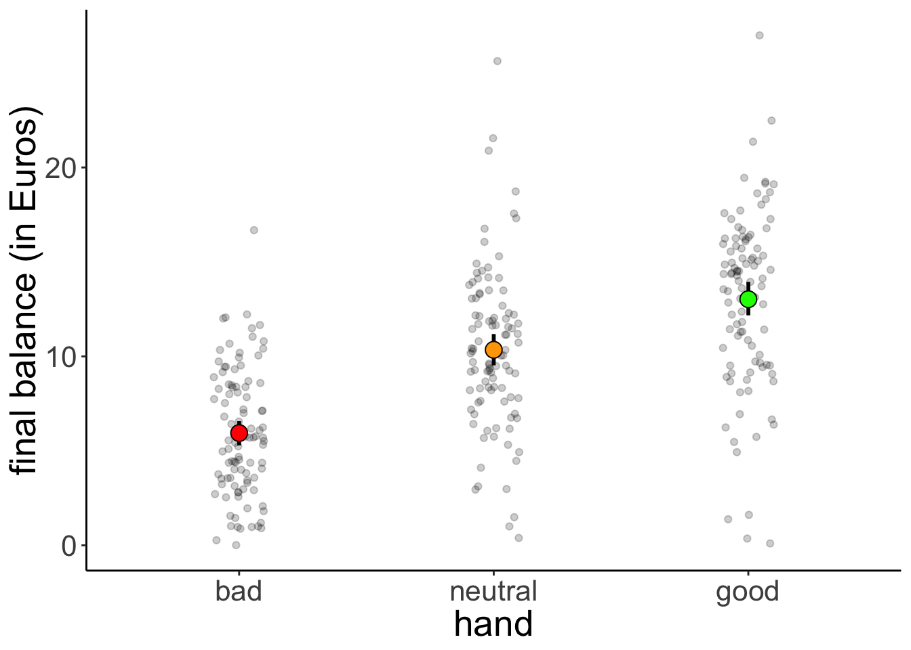
23.4.2 Linear model
And let’s now fit a simple (frequentist) regression model:
##
## Call:
## lm(formula = balance ~ 1 + hand, data = df.poker)
##
## Residuals:
## Min 1Q Median 3Q Max
## -12.9264 -2.5902 -0.0115 2.6573 15.2834
##
## Coefficients:
## Estimate Std. Error t value Pr(>|t|)
## (Intercept) 5.9415 0.4111 14.451 < 2e-16 ***
## handneutral 4.4051 0.5815 7.576 4.55e-13 ***
## handgood 7.0849 0.5815 12.185 < 2e-16 ***
## ---
## Signif. codes: 0 '***' 0.001 '**' 0.01 '*' 0.05 '.' 0.1 ' ' 1
##
## Residual standard error: 4.111 on 297 degrees of freedom
## Multiple R-squared: 0.3377, Adjusted R-squared: 0.3332
## F-statistic: 75.7 on 2 and 297 DF, p-value: < 2.2e-1623.4.3 Bayesian model
Now, let’s fit a Bayesian regression model using the brm() function:
fit.brm1 = brm(formula = balance ~ 1 + hand,
data = df.poker,
file = "cache/23/brm1")
fit.brm1 %>%
summary()## Family: gaussian
## Links: mu = identity; sigma = identity
## Formula: balance ~ 1 + hand
## Data: df.poker (Number of observations: 300)
## Samples: 4 chains, each with iter = 2000; warmup = 1000; thin = 1;
## total post-warmup samples = 4000
##
## Population-Level Effects:
## Estimate Est.Error l-95% CI u-95% CI Rhat Bulk_ESS Tail_ESS
## Intercept 5.93 0.41 5.12 6.72 1.00 2986 2744
## handneutral 4.41 0.58 3.30 5.55 1.00 3497 2903
## handgood 7.10 0.58 5.99 8.29 1.00 3545 2932
##
## Family Specific Parameters:
## Estimate Est.Error l-95% CI u-95% CI Rhat Bulk_ESS Tail_ESS
## sigma 4.12 0.17 3.81 4.46 1.00 3650 2921
##
## Samples were drawn using sampling(NUTS). For each parameter, Bulk_ESS
## and Tail_ESS are effective sample size measures, and Rhat is the potential
## scale reduction factor on split chains (at convergence, Rhat = 1).I use the file = argument to save the model’s results so that when I run this code chunk again, the model doesn’t need to be fit again (fitting Bayesian models takes a while …).
23.4.3.1 Visualize the posteriors
Let’s visualize what the posterior for the different parameters looks like. We use the geom_halfeyeh() function from the “tidybayes” package to do so:
fit.brm1 %>%
posterior_samples() %>%
select(-lp__) %>%
pivot_longer(cols = everything(),
names_to = "variable",
values_to = "value") %>%
ggplot(data = .,
mapping = aes(y = variable,
x = value)) +
geom_halfeyeh(fun.data = mode_hdih)## Warning: Ignoring unknown parameters: fun.data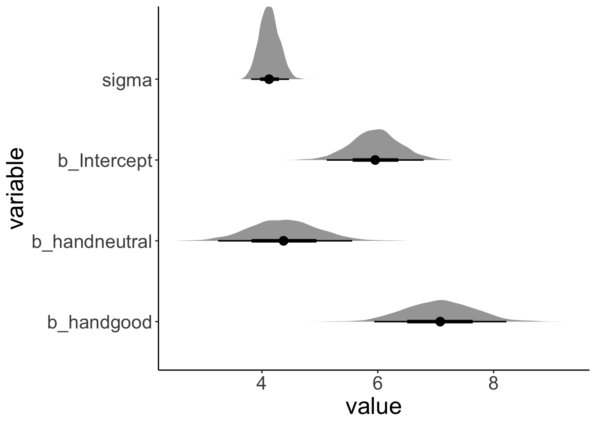
23.4.3.2 Compute highest density intervals
To compute the MAP (maximum a posteriori probability) estimate and highest density interval, we use the mode_hdi() function that comes with the “tidybayes” package.
fit.brm1 %>%
posterior_samples() %>%
clean_names() %>%
select(starts_with("b_"), sigma) %>%
mode_hdi() %>%
pivot_longer(cols = -c(.width:.interval),
names_to = "index",
values_to = "value") %>%
select(index, value) %>%
mutate(index = ifelse(str_detect(index, fixed(".")), index, str_c(index, ".mode"))) %>%
separate(index, into = c("parameter", "type"), sep = "\\.") %>%
pivot_wider(names_from = type,
values_from = value) %>%
kable(digits = 2) %>%
kable_styling(bootstrap_options = "striped",
full_width = F)| parameter | mode | lower | upper |
|---|---|---|---|
| b_intercept | 6.02 | 5.13 | 6.73 |
| b_handneutral | 4.46 | 3.29 | 5.54 |
| b_handgood | 7.07 | 5.95 | 8.21 |
| sigma | 4.11 | 3.81 | 4.46 |
23.4.3.3 Posterior predictive check
To check whether the model did a good job capturing the data, we can simulate what future data the Baysian model predicts, now that it has learned from the data we feed into it.

This looks good! The predicted shaped of the data based on samples from the posterior distribution looks very similar to the shape of the actual data.
Let’s make a hypothetical outcome plot that shows what concrete data sets the model would predict:
# generate predictive samples
df.predictive_samples = fit.brm1 %>%
posterior_samples() %>%
clean_names() %>%
select(contains("b_"), sigma) %>%
sample_n(size = 20) %>%
mutate(sample = 1:n()) %>%
group_by(sample) %>%
nest() %>%
mutate(bad = map(data, ~ .$b_intercept + rnorm(100, sd = .$sigma)),
neutral = map(data, ~ .$b_intercept + .$b_handneutral + rnorm(100, sd = .$sigma)),
good = map(data, ~ .$b_intercept + .$b_handgood + rnorm(100, sd = .$sigma))) %>%
unnest(c(bad, neutral, good)) %>%
select(-data)
# plot the results as an animation
p = df.predictive_samples %>%
pivot_longer(cols = -sample,
names_to = "hand",
values_to = "balance") %>%
mutate(hand = factor(hand, levels = c("bad", "neutral", "good"))) %>%
ggplot(mapping = aes(x = hand,
y = balance,
fill = hand)) +
geom_point(alpha = 0.2,
position = position_jitter(height = 0, width = 0.1)) +
stat_summary(fun.data = "mean_cl_boot",
geom = "linerange",
size = 1) +
stat_summary(fun = "mean",
geom = "point",
shape = 21,
size = 4) +
labs(y = "final balance (in Euros)") +
scale_fill_manual(values = c("red", "orange", "green")) +
theme(legend.position = "none") +
transition_manual(sample)
animate(p, nframes = 120, width = 800, height = 600, res = 96, type = "cairo")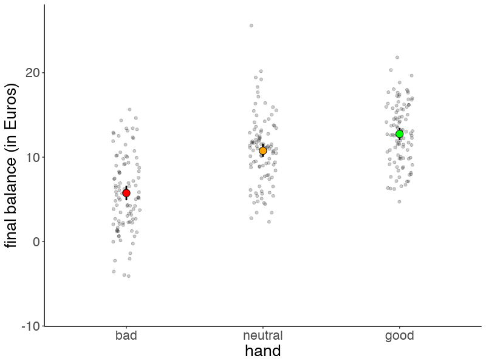
Here is the same plot, but this time we make our life much easier by using the add_predicted_draws() function from the "tidybayes" package.
df.predictive_samples2 = df.poker %>%
add_predicted_draws(fit.brm1, n = 10)
p = ggplot(data = df.predictive_samples2,
mapping = aes(x = hand,
y = .prediction,
fill = hand)) +
geom_point(alpha = 0.2,
position = position_jitter(height = 0, width = 0.1)) +
stat_summary(fun.data = "mean_cl_boot",
geom = "linerange",
size = 1) +
stat_summary(fun = "mean",
geom = "point",
shape = 21,
size = 4) +
labs(y = "final balance (in Euros)") +
scale_fill_manual(values = c("red", "orange", "green")) +
theme(legend.position = "none") +
transition_manual(.draw)
animate(p, nframes = 120, width = 800, height = 600, res = 96, type = "cairo")## nframes and fps adjusted to match transition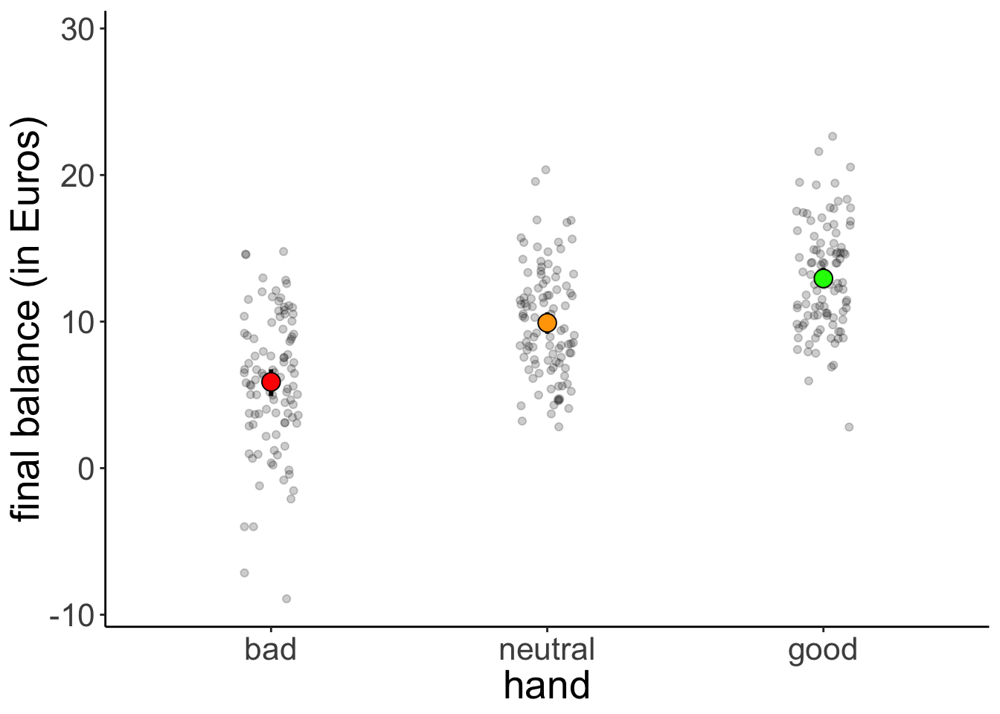
And here I’ve used credible intervals instead of bootstrapped confidence intervals to illustrate the model’s uncertainty about the fitted means for each group.
df.fitted_samples = df.poker %>%
add_fitted_draws(fit.brm1) %>%
group_by(hand) %>%
mean_hdci(.value)
ggplot(data = df.poker,
mapping = aes(x = hand,
y = balance,
fill = hand)) +
geom_point(alpha = 0.2,
position = position_jitter(height = 0, width = 0.1)) +
geom_pointrange(data = df.fitted_samples,
mapping = aes(x = hand,
y = .value,
ymin = .lower,
ymax = .upper),
size = 1) +
stat_summary(fun = "mean",
geom = "point",
shape = 21,
size = 4) +
labs(y = "final balance (in Euros)") +
scale_fill_manual(values = c("red", "orange", "green")) +
theme(legend.position = "none")
23.4.3.4 Test hypothesis
One key advantage of Bayesian over frequentist analysis is that we can test hypothesis in a very flexible manner by directly probing our posterior samples in different ways.
We may ask, for example, what the probability is that the parameter for the difference between a bad hand and a neutral hand (b_handneutral) is greater than 0. Let’s plot the posterior distribution together with the criterion:
fit.brm1 %>%
posterior_samples() %>%
select(b_handneutral) %>%
pivot_longer(cols = everything(),
names_to = "variable",
values_to = "value") %>%
ggplot(data = .,
mapping = aes(y = variable, x = value)) +
geom_halfeyeh() +
geom_vline(xintercept = 0,
color = "red")
We see that the posterior is definitely greater than 0.
We can ask many different kinds of questions about the data by doing basic arithmetic on our posterior samples. The hypothesis() function makes this even easier. Here are some examples:
# the probability that the posterior for handneutral is less than 0
hypothesis(fit.brm1,
hypothesis = "handneutral < 0")## Hypothesis Tests for class b:
## Hypothesis Estimate Est.Error CI.Lower CI.Upper Evid.Ratio Post.Prob
## 1 (handneutral) < 0 4.41 0.58 3.48 5.35 0 0
## Star
## 1
## ---
## 'CI': 90%-CI for one-sided and 95%-CI for two-sided hypotheses.
## '*': For one-sided hypotheses, the posterior probability exceeds 95%;
## for two-sided hypotheses, the value tested against lies outside the 95%-CI.
## Posterior probabilities of point hypotheses assume equal prior probabilities.# the probability that the posterior for handneutral is greater than 4
hypothesis(fit.brm1,
hypothesis = "handneutral > 4") %>%
plot()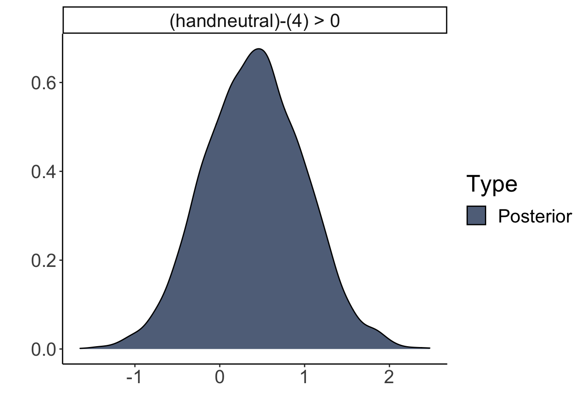
# the probability that good hands make twice as much as bad hands
hypothesis(fit.brm1,
hypothesis = "Intercept + handgood > 2 * Intercept")## Hypothesis Tests for class b:
## Hypothesis Estimate Est.Error CI.Lower CI.Upper Evid.Ratio
## 1 (Intercept+handgo... > 0 1.18 0.93 -0.29 2.67 8.5
## Post.Prob Star
## 1 0.89
## ---
## 'CI': 90%-CI for one-sided and 95%-CI for two-sided hypotheses.
## '*': For one-sided hypotheses, the posterior probability exceeds 95%;
## for two-sided hypotheses, the value tested against lies outside the 95%-CI.
## Posterior probabilities of point hypotheses assume equal prior probabilities.We can also make a plot of what the posterior distribution of the hypothesis looks like:

# the probability that neutral hands make less than the average of bad and good hands
hypothesis(fit.brm1,
hypothesis = "Intercept + handneutral < (Intercept + Intercept + handgood) / 2")## Hypothesis Tests for class b:
## Hypothesis Estimate Est.Error CI.Lower CI.Upper Evid.Ratio
## 1 (Intercept+handne... < 0 0.86 0.5 0.05 1.68 0.04
## Post.Prob Star
## 1 0.04
## ---
## 'CI': 90%-CI for one-sided and 95%-CI for two-sided hypotheses.
## '*': For one-sided hypotheses, the posterior probability exceeds 95%;
## for two-sided hypotheses, the value tested against lies outside the 95%-CI.
## Posterior probabilities of point hypotheses assume equal prior probabilities.Let’s double check one example, and calculate the result directly based on the posterior samples:
df.hypothesis = fit.brm1 %>%
posterior_samples() %>%
clean_names() %>%
select(starts_with("b_")) %>%
mutate(neutral = b_intercept + b_handneutral,
bad_good_average = (b_intercept + b_intercept + b_handgood)/2,
hypothesis = neutral < bad_good_average)
df.hypothesis %>%
summarize(p = sum(hypothesis)/n())## p
## 1 0.0397523.4.3.5 Model comparison
23.4.3.5.1 Bayes factor
Another way of testing hypothesis is via the Bayes factor. Let’s fit the two models we are interested in comparing with each other:
fit.brm2 = brm(formula = balance ~ 1 + hand,
data = df.poker,
save_all_pars = T,
file = "cache/23/brm2")
fit.brm3 = brm(formula = balance ~ 1 + hand + skill,
data = df.poker,
save_all_pars = T,
file = "cache/23/brm3")And then compare the models useing the bayes_factor() function:
## Iteration: 1
## Iteration: 2
## Iteration: 3
## Iteration: 4
## Iteration: 1
## Iteration: 2
## Iteration: 3
## Iteration: 4## Estimated Bayes factor in favor of fit.brm3 over fit.brm2: 3.8134223.4.3.5.2 Approximate cross-validation
## No problematic observations found. Returning the original 'loo' object.## No problematic observations found. Returning the original 'loo' object.## elpd_diff se_diff
## fit.brm3 0.0 0.0
## fit.brm2 -0.3 1.523.4.3.6 Full specification
So far, we have used the defaults that brm() comes with and not bothered about specifiying the priors, etc.
##### Getting the priors
Notice that we didn’t specify any priors in the model. By default, “brms” assigns weakly informative priors to the parameters in the model. We can see what these are by running the following command:
## prior class coef group resp dpar nlpar bound
## 1 b
## 2 b handgood
## 3 b handneutral
## 4 student_t(3, 10, 10) Intercept
## 5 student_t(3, 0, 10) sigmaWe can also get information about which priors need to be specified before fitting a model:
## prior class coef group resp dpar nlpar bound
## 1 b
## 2 b handgood
## 3 b handneutral
## 4 student_t(3, 10, 10) Intercept
## 5 student_t(3, 0, 10) sigmaHere is an example for what a more complete model specification could look like:
fit.brm4 = brm(formula = balance ~ 1 + hand,
family = "gaussian",
data = df.poker,
prior = c(prior(normal(0, 10), class = "b", coef = "handgood"),
prior(normal(0, 10), class = "b", coef = "handneutral"),
prior(student_t(3, 3, 10), class = "Intercept"),
prior(student_t(3, 0, 10), class = "sigma")),
inits = list(list(Intercept = 0, sigma = 1, handgood = 5, handneutral = 5),
list(Intercept = -5, sigma = 3, handgood = 2, handneutral = 2),
list(Intercept = 2, sigma = 1, handgood = -1, handneutral = 1),
list(Intercept = 1, sigma = 2, handgood = 2, handneutral = -2)),
iter = 4000,
warmup = 1000,
chains = 4,
file = "cache/23/brm4",
seed = 1)
fit.brm4 %>%
summary()## Family: gaussian
## Links: mu = identity; sigma = identity
## Formula: balance ~ 1 + hand
## Data: df.poker (Number of observations: 300)
## Samples: 4 chains, each with iter = 4000; warmup = 1000; thin = 1;
## total post-warmup samples = 12000
##
## Population-Level Effects:
## Estimate Est.Error l-95% CI u-95% CI Rhat Bulk_ESS Tail_ESS
## Intercept 5.96 0.41 5.17 6.76 1.00 10540 8323
## handneutral 4.38 0.58 3.25 5.51 1.00 10732 8759
## handgood 7.05 0.58 5.91 8.13 1.00 11077 9673
##
## Family Specific Parameters:
## Estimate Est.Error l-95% CI u-95% CI Rhat Bulk_ESS Tail_ESS
## sigma 4.13 0.17 3.81 4.49 1.00 11016 8475
##
## Samples were drawn using sampling(NUTS). For each parameter, Bulk_ESS
## and Tail_ESS are effective sample size measures, and Rhat is the potential
## scale reduction factor on split chains (at convergence, Rhat = 1).We can also take a look at the Stan code that the brm() function creates:
## // generated with brms 2.10.0
## functions {
## }
## data {
## int<lower=1> N; // number of observations
## vector[N] Y; // response variable
## int<lower=1> K; // number of population-level effects
## matrix[N, K] X; // population-level design matrix
## int prior_only; // should the likelihood be ignored?
## }
## transformed data {
## int Kc = K - 1;
## matrix[N, Kc] Xc; // centered version of X without an intercept
## vector[Kc] means_X; // column means of X before centering
## for (i in 2:K) {
## means_X[i - 1] = mean(X[, i]);
## Xc[, i - 1] = X[, i] - means_X[i - 1];
## }
## }
## parameters {
## vector[Kc] b; // population-level effects
## // temporary intercept for centered predictors
## real Intercept;
## real<lower=0> sigma; // residual SD
## }
## transformed parameters {
## }
## model {
## // priors including all constants
## target += normal_lpdf(b[1] | 0, 10);
## target += normal_lpdf(b[2] | 0, 10);
## target += student_t_lpdf(Intercept | 3, 3, 10);
## target += student_t_lpdf(sigma | 3, 0, 10)
## - 1 * student_t_lccdf(0 | 3, 0, 10);
## // likelihood including all constants
## if (!prior_only) {
## target += normal_id_glm_lpdf(Y | Xc, Intercept, b, sigma);
## }
## }
## generated quantities {
## // actual population-level intercept
## real b_Intercept = Intercept - dot_product(means_X, b);
## }One thing worth noticing: by default, “brms” centers the predictors which makes it easier to assign a default prior over the intercept.
23.4.3.6.1 Prior predictive check
fit.brm4.prior = brm(formula = balance ~ 0 + intercept + hand,
family = "gaussian",
data = df.poker,
prior = c(prior(normal(0, 10), class = "b"),
prior(student_t(3, 0, 10), class = "sigma")),
iter = 4000,
warmup = 1000,
chains = 4,
file = "cache/23/brm4prior",
sample_prior = "only",
seed = 1)
# generate prior samples
df.prior_samples = fit.brm4.prior %>%
posterior_samples() %>%
clean_names() %>%
select(contains("b_"), sigma) %>%
sample_n(size = 20) %>%
mutate(sample = 1:n()) %>%
group_by(sample) %>%
nest() %>%
mutate(bad = map(data, ~ .$b_intercept + rnorm(100, sd = .$sigma)),
neutral = map(data, ~ .$b_intercept + .$b_handneutral + rnorm(100, sd = .$sigma)),
good = map(data, ~ .$b_intercept + .$b_handgood + rnorm(100, sd = .$sigma))) %>%
unnest(c(bad, neutral, good)) %>%
select(-data)
# plot the results as an animation
p = df.prior_samples %>%
pivot_longer(cols = -sample,
names_to = "hand",
values_to = "balance") %>%
mutate(hand = factor(hand, levels = c("bad", "neutral", "good"))) %>%
ggplot(mapping = aes(x = hand,
y = balance,
fill = hand)) +
geom_point(alpha = 0.2,
position = position_jitter(height = 0, width = 0.1)) +
stat_summary(fun.data = "mean_cl_boot",
geom = "linerange",
size = 1) +
stat_summary(fun = "mean",
geom = "point",
shape = 21,
size = 4) +
labs(y = "final balance (in Euros)") +
scale_fill_manual(values = c("red", "orange", "green")) +
theme(legend.position = "none") +
transition_manual(sample)
animate(p, nframes = 120, width = 800, height = 600, res = 96, type = "cairo")## nframes and fps adjusted to match transition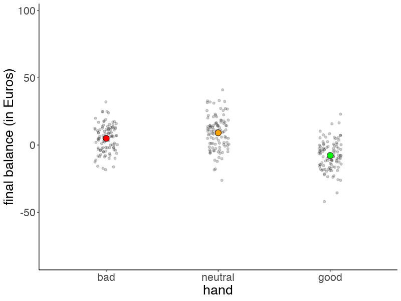
23.4.3.7 Inference diagnostics
So far, we’ve assumed that the inference has worked out. We can check this by running plot() on our brm object:
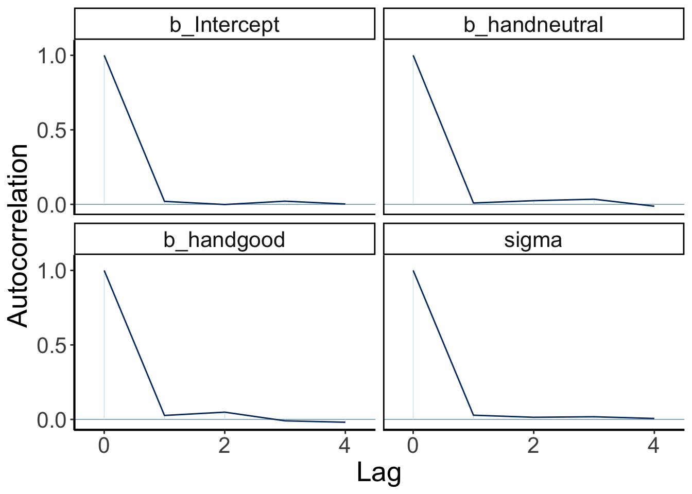
Let’s make our own version of a trace plot for one parameter in the model:
fit.brm1 %>%
spread_draws(b_Intercept) %>%
clean_names() %>%
mutate(chain = as.factor(chain)) %>%
ggplot(aes(x = iteration, y = b_intercept, group = chain, color = chain)) +
geom_line()
We can also take a look at the auto-correlation plot. Ideally, we want to generate independent samples from the posterior. So we don’t want subsequent samples to be strongly correlated with each other. Let’s take a look:
variables = fit.brm1 %>%
get_variables() %>%
.[1:4]
fit.brm1 %>%
posterior_samples() %>%
mcmc_acf(pars = variables,
lags = 4)
Looking good! The autocorrelation should become very small as the lag increases (indicating that we are getting independent samples from the posterior).
23.4.3.7.1 When things go wrong
Let’s try to fit a model to very little data (just two observations) with extremely uninformative priors:
df.data = tibble(y = c(-1, 1))
fit.brm5 = brm(data = df.data,
family = gaussian,
formula = y ~ 1,
prior = c(prior(uniform(-1e10, 1e10), class = Intercept),
prior(uniform(0, 1e10), class = sigma)),
inits = list(list(Intercept = 0, sigma = 1),
list(Intercept = 0, sigma = 1)),
iter = 4000,
warmup = 1000,
chains = 2,
file = "cache/23/brm5")Let’s take a look at the posterior distributions of the model parameters:
## Warning: Parts of the model have not converged (some Rhats are > 1.05). Be
## careful when analysing the results! We recommend running more iterations and/or
## setting stronger priors.## Warning: There were 1203 divergent transitions after warmup.
## Increasing adapt_delta above 0.8 may help. See http://mc-stan.org/misc/
## warnings.html#divergent-transitions-after-warmup## Family: gaussian
## Links: mu = identity; sigma = identity
## Formula: y ~ 1
## Data: df.data (Number of observations: 2)
## Samples: 2 chains, each with iter = 4000; warmup = 1000; thin = 1;
## total post-warmup samples = 6000
##
## Population-Level Effects:
## Estimate Est.Error l-95% CI u-95% CI Rhat Bulk_ESS
## Intercept 357550121.58 1416057299.71 -2244033111.47 3333594132.43 1.78 3
## Tail_ESS
## Intercept 24
##
## Family Specific Parameters:
## Estimate Est.Error l-95% CI u-95% CI Rhat Bulk_ESS Tail_ESS
## sigma 1524412740.64 2392424321.98 21668.93 8317582240.06 1.40 4 41
##
## Samples were drawn using sampling(NUTS). For each parameter, Bulk_ESS
## and Tail_ESS are effective sample size measures, and Rhat is the potential
## scale reduction factor on split chains (at convergence, Rhat = 1).Not looking good – The estimates and credible intervals are off the charts. And the effective samples sizes in the chains are very small.
Let’s visualize the trace plots:

fit.brm5 %>%
spread_draws(b_Intercept) %>%
clean_names() %>%
mutate(chain = as.factor(chain)) %>%
ggplot(aes(x = iteration,
y = b_intercept,
group = chain,
color = chain)) +
geom_line()
Given that we have so little data in this case, we need to help the model a little bit by providing some slighlty more specific priors.
fit.brm6 = brm(data = df.data,
family = gaussian,
formula = y ~ 1,
prior = c(prior(normal(0, 10), class = Intercept), # more reasonable priors
prior(cauchy(0, 1), class = sigma)),
iter = 4000,
warmup = 1000,
chains = 2,
seed = 1,
file = "cache/23/brm6")Let’s take a look at the posterior distributions of the model parameters:
## Warning: There were 3 divergent transitions after warmup. Increasing adapt_delta
## above 0.8 may help. See http://mc-stan.org/misc/warnings.html#divergent-
## transitions-after-warmup## Family: gaussian
## Links: mu = identity; sigma = identity
## Formula: y ~ 1
## Data: df.data (Number of observations: 2)
## Samples: 2 chains, each with iter = 4000; warmup = 1000; thin = 1;
## total post-warmup samples = 6000
##
## Population-Level Effects:
## Estimate Est.Error l-95% CI u-95% CI Rhat Bulk_ESS Tail_ESS
## Intercept -0.13 1.69 -4.10 3.06 1.00 1352 909
##
## Family Specific Parameters:
## Estimate Est.Error l-95% CI u-95% CI Rhat Bulk_ESS Tail_ESS
## sigma 2.04 1.88 0.61 6.95 1.00 1144 1426
##
## Samples were drawn using sampling(NUTS). For each parameter, Bulk_ESS
## and Tail_ESS are effective sample size measures, and Rhat is the potential
## scale reduction factor on split chains (at convergence, Rhat = 1).This looks much better. There is still quite a bit of uncertainty in our paremeter estimates, but it has reduced dramatically.
Let’s visualize the trace plots:
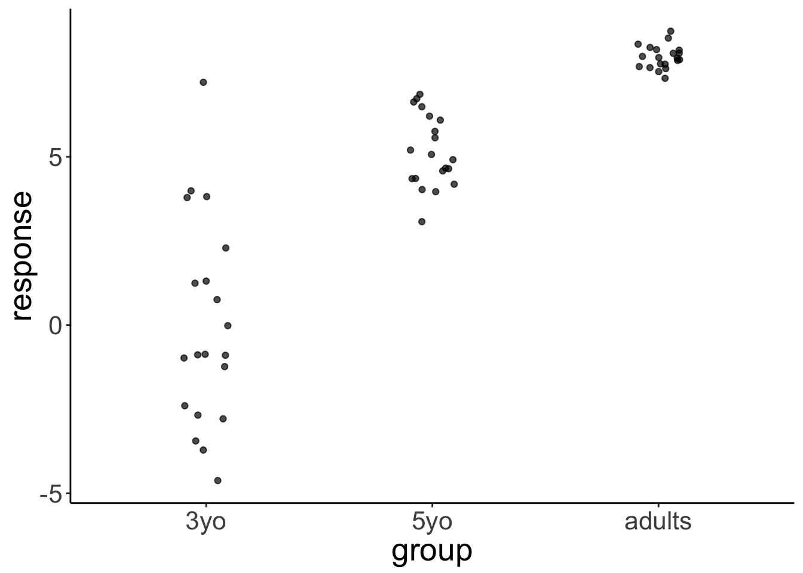
fit.brm6 %>%
spread_draws(b_Intercept, sigma) %>%
clean_names() %>%
mutate(chain = as.factor(chain)) %>%
pivot_longer(cols = c(b_intercept, sigma)) %>%
ggplot(aes(x = iteration,
y = value,
group = chain,
color = chain)) +
geom_line() +
facet_wrap(vars(name), ncol = 1)
Looking mostly good!
23.5 Sleep study
df.sleep = sleepstudy %>%
as_tibble() %>%
clean_names() %>%
mutate(subject = as.character(subject)) %>%
select(subject, days, reaction) %>%
bind_rows(tibble(subject = "374",
days = 0:1,
reaction = c(286, 288)),
tibble(subject = "373",
days = 0,
reaction = 245))23.5.1 Frequentist analysis
## Linear mixed model fit by REML ['lmerMod']
## Formula: reaction ~ 1 + days + (1 + days | subject)
## Data: df.sleep
##
## REML criterion at convergence: 1771.4
##
## Scaled residuals:
## Min 1Q Median 3Q Max
## -3.9707 -0.4703 0.0276 0.4594 5.2009
##
## Random effects:
## Groups Name Variance Std.Dev. Corr
## subject (Intercept) 582.73 24.140
## days 35.03 5.919 0.07
## Residual 649.36 25.483
## Number of obs: 183, groups: subject, 20
##
## Fixed effects:
## Estimate Std. Error t value
## (Intercept) 252.543 6.433 39.256
## days 10.452 1.542 6.778
##
## Correlation of Fixed Effects:
## (Intr)
## days -0.137## Computing profile confidence intervals ...## 2.5 % 97.5 %
## .sig01 14.2566758 36.2783159
## .sig02 -0.4720036 0.6823153
## .sig03 3.8063695 8.7363330
## .sigma 22.8116539 28.7123101
## (Intercept) 239.6584255 265.4573030
## days 7.3471481 13.552911323.5.2 Bayesian analysis
23.5.2.1 Fit the model
23.5.2.2 Check the model diagnostics
## Family: gaussian
## Links: mu = identity; sigma = identity
## Formula: reaction ~ 1 + days + (1 + days | subject)
## Data: df.sleep (Number of observations: 183)
## Samples: 4 chains, each with iter = 2000; warmup = 1000; thin = 1;
## total post-warmup samples = 4000
##
## Group-Level Effects:
## ~subject (Number of levels: 20)
## Estimate Est.Error l-95% CI u-95% CI Rhat Bulk_ESS Tail_ESS
## sd(Intercept) 26.18 6.25 15.65 40.54 1.00 1879 2463
## sd(days) 6.59 1.53 4.14 10.13 1.00 1145 1625
## cor(Intercept,days) 0.09 0.29 -0.46 0.67 1.00 993 1526
##
## Population-Level Effects:
## Estimate Est.Error l-95% CI u-95% CI Rhat Bulk_ESS Tail_ESS
## Intercept 252.18 6.86 238.47 265.42 1.00 1826 2766
## days 10.46 1.69 7.13 13.78 1.00 1203 1782
##
## Family Specific Parameters:
## Estimate Est.Error l-95% CI u-95% CI Rhat Bulk_ESS Tail_ESS
## sigma 25.77 1.57 22.93 29.14 1.00 3864 2773
##
## Samples were drawn using sampling(NUTS). For each parameter, Bulk_ESS
## and Tail_ESS are effective sample size measures, and Rhat is the potential
## scale reduction factor on split chains (at convergence, Rhat = 1).

23.5.2.4 Interpret the parameters
| effect | component | group | term | estimate | std.error | conf.low | conf.high |
|---|---|---|---|---|---|---|---|
| fixed | cond | NA | (Intercept) | 252.18 | 6.86 | 238.47 | 265.42 |
| fixed | cond | NA | days | 10.46 | 1.69 | 7.13 | 13.78 |
| ran_pars | cond | subject | sd__(Intercept) | 26.18 | 6.25 | 15.65 | 40.54 |
| ran_pars | cond | subject | sd__days | 6.59 | 1.53 | 4.14 | 10.13 |
| ran_pars | cond | subject | cor__(Intercept).days | 0.09 | 0.29 | -0.46 | 0.67 |
| ran_pars | cond | Residual | sd__Observation | 25.77 | 1.57 | 22.93 | 29.14 |
23.5.2.5 Visualize the results
23.5.2.5.1 Summary of posterior distributions
fit.brm7 %>%
posterior_samples() %>%
select(-c(lp__, contains("subject"))) %>%
pivot_longer(cols = everything(),
names_to = "variable",
values_to = "value") %>%
ggplot(data = .,
mapping = aes(y = variable,
x = value)) +
geom_halfeyeh(fun.data = mode_hdih)## Warning: Ignoring unknown parameters: fun.data
23.5.2.5.2 Comparison with data
23.5.2.5.2.1 Model prediction with credible intervals
fit.brm7 %>%
fitted() %>%
as_tibble() %>%
clean_names() %>%
bind_cols(df.sleep) %>%
ggplot(data = .,
mapping = aes(x = days,
y = reaction)) +
geom_ribbon(aes(ymin = q2_5,
ymax = q97_5),
fill = "lightblue") +
geom_line(aes(y = estimate),
color = "blue") +
geom_point() +
facet_wrap(~subject, ncol = 5) +
labs(x = "Days of sleep deprivation",
y = "Average reaction time (ms)") +
scale_x_continuous(breaks = 0:4 * 2) +
theme(strip.text = element_text(size = 12),
axis.text.y = element_text(size = 12))## geom_path: Each group consists of only one observation. Do you need to adjust
## the group aesthetic?
23.5.2.5.2.2 Model prediction for random samples
df.model = df.sleep %>%
complete(subject, days) %>%
add_fitted_draws(newdata = .,
model = fit.brm7,
n = 10,
seed = 1)
df.sleep %>%
ggplot(data = .,
mapping = aes(x = days,
y = reaction)) +
geom_line(data = df.model,
aes(y = .value,
group = .draw),
color = "lightblue",
alpha = 0.5) +
geom_point() +
facet_wrap(~subject, ncol = 5) +
labs(x = "Days of sleep deprivation",
y = "Average reaction time (ms)") +
scale_x_continuous(breaks = 0:4 * 2) +
theme(strip.text = element_text(size = 12),
axis.text.y = element_text(size = 12))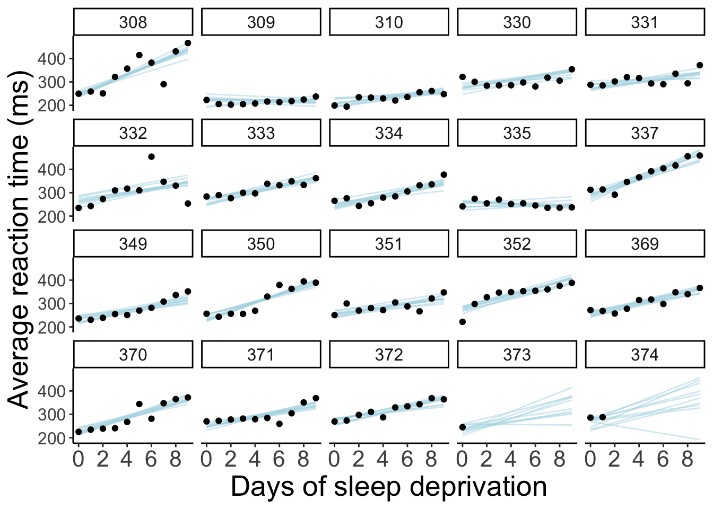
23.5.2.5.2.3 Animated model prediction for random samples
df.model = df.sleep %>%
complete(subject, days) %>%
add_fitted_draws(newdata = .,
model = fit.brm7,
n = 10,
seed = 1)
p = df.sleep %>%
ggplot(data = .,
mapping = aes(x = days,
y = reaction)) +
geom_line(data = df.model,
aes(y = .value,
group = .draw),
color = "black") +
geom_point() +
facet_wrap(~subject, ncol = 5) +
labs(x = "Days of sleep deprivation",
y = "Average reaction time (ms)") +
scale_x_continuous(breaks = 0:4 * 2) +
theme(strip.text = element_text(size = 12),
axis.text.y = element_text(size = 12)) +
transition_states(.draw, 0, 1) +
shadow_mark(past = TRUE, alpha = 1/5, color = "gray50")
animate(p, nframes = 10, fps = 2.5, width = 800, height = 600, res = 96, type = "cairo")
23.6 Titanic study
23.6.1 Frequentist analysis
23.6.1.1 Fit the model
fit.glm = glm(formula = survived ~ 1 + fare + sex,
family = "binomial",
data = df.titanic)
fit.glm %>%
summary()##
## Call:
## glm(formula = survived ~ 1 + fare + sex, family = "binomial",
## data = df.titanic)
##
## Deviance Residuals:
## Min 1Q Median 3Q Max
## -2.2082 -0.6208 -0.5824 0.8126 1.9658
##
## Coefficients:
## Estimate Std. Error z value Pr(>|z|)
## (Intercept) 0.647100 0.148502 4.358 1.32e-05 ***
## fare 0.011214 0.002295 4.886 1.03e-06 ***
## sexmale -2.422760 0.170515 -14.208 < 2e-16 ***
## ---
## Signif. codes: 0 '***' 0.001 '**' 0.01 '*' 0.05 '.' 0.1 ' ' 1
##
## (Dispersion parameter for binomial family taken to be 1)
##
## Null deviance: 1186.66 on 890 degrees of freedom
## Residual deviance: 884.31 on 888 degrees of freedom
## AIC: 890.31
##
## Number of Fisher Scoring iterations: 523.6.1.2 Visualize the results
df.titanic %>%
mutate(sex = as.factor(sex)) %>%
ggplot(data = .,
mapping = aes(x = fare,
y = survived,
color = sex)) +
geom_point(alpha = 0.1, size = 2) +
geom_smooth(method = "glm",
method.args = list(family = "binomial"),
alpha = 0.2,
aes(fill = sex)) +
scale_color_brewer(palette = "Set1")## `geom_smooth()` using formula 'y ~ x'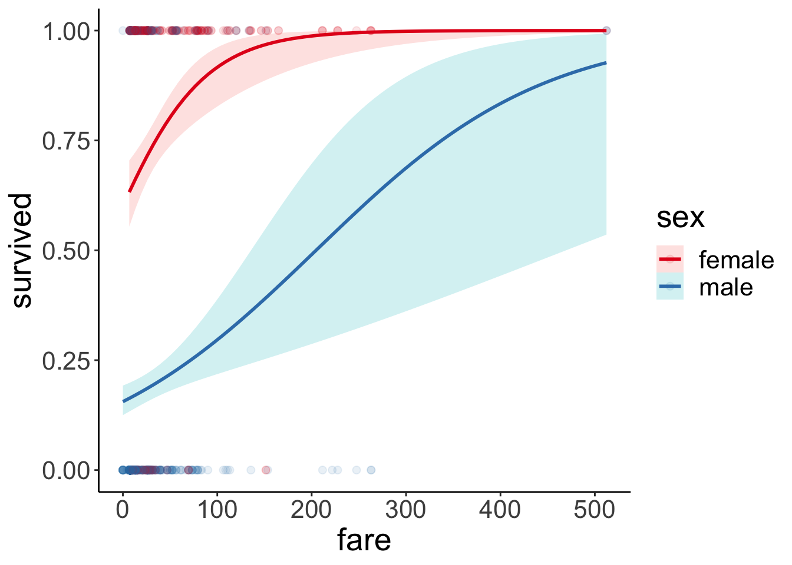
23.6.2 Bayesian anaysis
23.6.2.1 Fit the model
23.6.2.2 Check the model diagnostics
## Family: bernoulli
## Links: mu = logit
## Formula: survived ~ 1 + fare + sex
## Data: df.titanic (Number of observations: 891)
## Samples: 4 chains, each with iter = 2000; warmup = 1000; thin = 1;
## total post-warmup samples = 4000
##
## Population-Level Effects:
## Estimate Est.Error l-95% CI u-95% CI Rhat Bulk_ESS Tail_ESS
## Intercept 0.64 0.15 0.35 0.93 1.00 3446 3198
## fare 0.01 0.00 0.01 0.02 1.00 5268 2420
## sexmale -2.43 0.17 -2.76 -2.10 1.00 2959 2502
##
## Samples were drawn using sampling(NUTS). For each parameter, Bulk_ESS
## and Tail_ESS are effective sample size measures, and Rhat is the potential
## scale reduction factor on split chains (at convergence, Rhat = 1).
23.6.2.3 Validate the model

Let’s visualize what the posterior predictive would have looked like for a linear model (instead of a logistic model).
fit.brm9 = brm(formula = survived ~ 1 + fare + sex,
data = df.titanic,
file = "cache/23/brm9",
seed = 1)
pp_check(fit.brm9,
nsamples = 100)
23.6.2.4 Interpret the parameters
## Warning in stri_replace_first_regex(string, pattern,
## fix_replacement(replacement), : argument is not an atomic vector; coercing| estimate | std.error | conf.low | conf.high |
|---|---|---|---|
| 0.64 | 0.15 | 0.35 | 0.93 |
| 0.01 | 0.00 | 0.01 | 0.02 |
| -2.43 | 0.17 | -2.76 | -2.10 |

23.6.2.5 Visualize the results
23.6.2.5.1 Summary of posterior distributions
fit.brm8 %>%
posterior_samples() %>%
select(-lp__) %>%
pivot_longer(cols = everything(),
names_to = "variable",
values_to = "value") %>%
ggplot(data = .,
mapping = aes(y = variable,
x = value)) +
stat_intervalh() +
scale_color_brewer()
23.6.2.5.2 Comparison with data
df.model = add_fitted_draws(newdata = expand_grid(sex = c("female", "male"),
fare = 0:500) %>%
mutate(sex = factor(sex, levels = c("female", "male"))),
model = fit.brm8,
n = 10)
ggplot(data = df.titanic,
mapping = aes(x = fare,
y = survived,
color = sex)) +
geom_point(alpha = 0.1, size = 2) +
geom_line(data = df.model %>%
filter(sex == "male"),
aes(y = .value,
group = .draw,
color = sex)) +
geom_line(data = df.model %>%
filter(sex == "female"),
aes(y = .value,
group = .draw,
color = sex)) +
scale_color_brewer(palette = "Set1")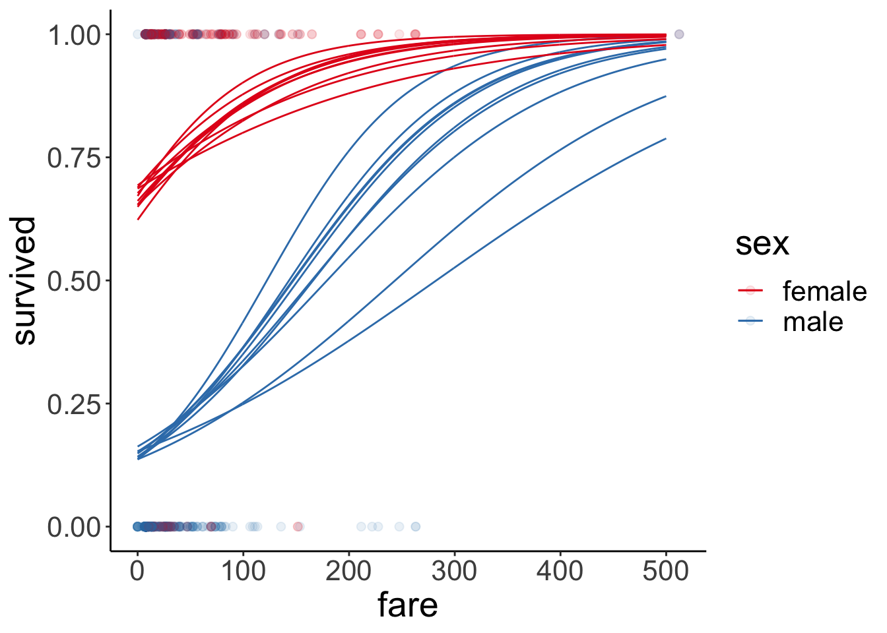
23.7 Additional resources
23.8 Session info
Information about this R session including which version of R was used, and what packages were loaded.
## R version 3.6.2 (2019-12-12)
## Platform: x86_64-apple-darwin15.6.0 (64-bit)
## Running under: macOS Mojave 10.14.6
##
## Matrix products: default
## BLAS: /Library/Frameworks/R.framework/Versions/3.6/Resources/lib/libRblas.0.dylib
## LAPACK: /Library/Frameworks/R.framework/Versions/3.6/Resources/lib/libRlapack.dylib
##
## locale:
## [1] en_US.UTF-8/en_US.UTF-8/en_US.UTF-8/C/en_US.UTF-8/en_US.UTF-8
##
## attached base packages:
## [1] stats graphics grDevices utils datasets methods base
##
## other attached packages:
## [1] forcats_0.5.0 stringr_1.4.0 dplyr_0.8.4 purrr_0.3.3
## [5] readr_1.3.1 tidyr_1.0.2 tibble_2.1.3 tidyverse_1.3.0
## [9] titanic_0.1.0 ggeffects_0.14.1 lme4_1.1-21 Matrix_1.2-18
## [13] modelr_0.1.6 bayesplot_1.7.1 broom.mixed_0.2.4 broom_0.5.5
## [17] GGally_1.4.0 gganimate_1.0.5 ggplot2_3.3.0 patchwork_1.0.0
## [21] brms_2.12.0 Rcpp_1.0.3 tidybayes_2.0.1 janitor_1.2.1
## [25] kableExtra_1.1.0 knitr_1.28
##
## loaded via a namespace (and not attached):
## [1] readxl_1.3.1 backports_1.1.5 Hmisc_4.3-1
## [4] plyr_1.8.6 igraph_1.2.4.2 TMB_1.7.16
## [7] splines_3.6.2 svUnit_0.7-12 crosstalk_1.0.0
## [10] rstantools_2.0.0 inline_0.3.15 digest_0.6.25
## [13] htmltools_0.4.0 rsconnect_0.8.16 fansi_0.4.1
## [16] checkmate_2.0.0 magrittr_1.5 cluster_2.1.0
## [19] matrixStats_0.55.0 xts_0.12-0 lpSolve_5.6.15
## [22] prettyunits_1.1.1 jpeg_0.1-8.1 colorspace_1.4-1
## [25] rvest_0.3.5 haven_2.2.0 xfun_0.12
## [28] callr_3.4.2 crayon_1.3.4 jsonlite_1.6.1
## [31] survival_3.1-8 zoo_1.8-7 glue_1.3.1
## [34] gtable_0.3.0 webshot_0.5.2 pkgbuild_1.0.6
## [37] rstan_2.19.3 abind_1.4-5 scales_1.1.0
## [40] mvtnorm_1.1-0 DBI_1.1.0 miniUI_0.1.1.1
## [43] htmlTable_1.13.3 viridisLite_0.3.0 xtable_1.8-4
## [46] progress_1.2.2 units_0.6-5 HDInterval_0.2.0
## [49] foreign_0.8-76 Formula_1.2-3 stats4_3.6.2
## [52] StanHeaders_2.21.0-1 DT_0.12 htmlwidgets_1.5.1
## [55] httr_1.4.1 threejs_0.3.3 arrayhelpers_1.1-0
## [58] RColorBrewer_1.1-2 ellipsis_0.3.0 acepack_1.4.1
## [61] pkgconfig_2.0.3 reshape_0.8.8 loo_2.2.0
## [64] farver_2.0.3 transformr_0.1.1 nnet_7.3-13
## [67] dbplyr_1.4.2 labeling_0.3 tidyselect_1.0.0
## [70] rlang_0.4.5 reshape2_1.4.3 later_1.0.0
## [73] munsell_0.5.0 cellranger_1.1.0 tools_3.6.2
## [76] cli_2.0.2 generics_0.0.2 sjlabelled_1.1.3
## [79] gifski_0.8.6 ggridges_0.5.2 evaluate_0.14
## [82] fastmap_1.0.1 yaml_2.2.1 fs_1.3.2
## [85] processx_3.4.2 nlme_3.1-145 mime_0.9
## [88] rstanarm_2.19.3 xml2_1.2.2 compiler_3.6.2
## [91] shinythemes_1.1.2 rstudioapi_0.11 png_0.1-7
## [94] e1071_1.7-3 reprex_0.3.0 tweenr_1.0.1
## [97] stringi_1.4.6 highr_0.8 ps_1.3.2
## [100] Brobdingnag_1.2-6 lattice_0.20-40 classInt_0.4-2
## [103] nloptr_1.2.1 markdown_1.1 shinyjs_1.1
## [106] vctrs_0.2.3 pillar_1.4.3 lifecycle_0.1.0
## [109] bridgesampling_1.0-0 data.table_1.12.8 insight_0.8.1
## [112] httpuv_1.5.2 latticeExtra_0.6-29 R6_2.4.1
## [115] bookdown_0.18 promises_1.1.0 KernSmooth_2.23-16
## [118] gridExtra_2.3 codetools_0.2-16 boot_1.3-24
## [121] colourpicker_1.0 MASS_7.3-51.5 gtools_3.8.1
## [124] assertthat_0.2.1 withr_2.1.2 shinystan_2.5.0
## [127] mgcv_1.8-31 parallel_3.6.2 hms_0.5.3
## [130] rpart_4.1-15 grid_3.6.2 class_7.3-15
## [133] coda_0.19-3 minqa_1.2.4 snakecase_0.11.0
## [136] rmarkdown_2.1 sf_0.8-1 shiny_1.4.0
## [139] lubridate_1.7.4 base64enc_0.1-3 dygraphs_1.1.1.6